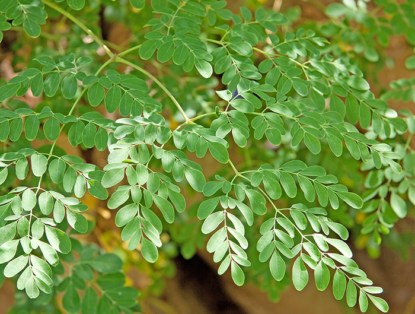

Introdução
Primeiro, foram formadas as equipes com os seguintes integrantes: Carlos Daniel, Ryan, Camilo, Raimundo Nonato, Eduardo, Adauto, Maria Antônia, Gabriele Rodrigues e Leonardo. Depois, as plantas foram sorteadas, e nossa equipe ficou responsável pela Moringa, Buriti e a Batata. Em seguida, a equipe se reuniu e cada integrante ficou responsável por uma parte do projeto.
Separamos a equipe da seguinte maneira: Raimundo Nonato, Ryan e Camilo ficaram responsáveis pela apresentação no auditório, onde Raimundo Nonato ficou com a Batata, Ryan com o Buriti e Camilo com a Moringa. Adauto, Daniel, Maria Antônia, Leonardo, Eduardo e Gabriele ficaram responsáveis pelo estande. No estande, formamos duplas para cada planta: Gabriele Rodrigues e Daniel ficaram com o Buriti; Adauto e Eduardo ficaram com a Moringa; e Maria Antônia e Leonardo ficaram com a Batata. Cada dupla foi encarregada de preparar receitas e montar a exposição da planta correspondente.
EQUIPES

EQUIPE DO AUDITÓRIO
- Raimundo Nonato
- Francisco Ryan
- Camilo
EQUIPE DO ESTANDE
- Adaulto
- Gabriele Rodrigues
- Carlos Daniel
- Antônio Eduardo
- Maria Antônia
- Leonardo
VEGETAIS USADOS PELA EQUIPE
- Batata inglesa
- Moringa
- Buriti
BATATA INGLESA
CARACTERÍSTICAS GERAIS
- Nome científico: Solanum tuberosum
- Família: Solanaceae
- Categoria: Folhas e Flores, Medicinal, Planta dicotiledônea
- Clima: Essa planta se dá super bem nas temperaturas baixas.
- Origem: América do Sul, da Cordilheira dos Andes
- Partes que podem ser consumidas: as pessoas costumam remover a casca e consomem apenas a sua polpa. Mas, para usufruir melhor os benefícios do alimento, o ideal é que você consuma todas as partes da batata.
CARACTERÍSTICAS BIOLÓGICAS
A batata apresenta em média 2,1% de proteína total, que significa cerca de 10,4% do peso seco do tubérculo. Considerando-se as produções e teores de proteínas de cada cultura, as batatas podem render cerca de 300 kg de proteínas por hectare.
CARACTERÍSTICAS QUÍMICAS
O tubérculo é composto de cerca de 80% de água, seguido de carboidratos (cerca de 16%), principalmente amido que, em suas diferentes formas, são absorvidos pelo organismo como glicose, após hidrólise enzimática. De 1% a 2% constitui-se de fibra, concentrada na pele (casca), e entre 0,1% a 0,7% de açúcares simples, como glicose, frutose e sacarose. Após os carboidratos, as proteínas são os nutrientes mais abundantes no tubérculo, com cerca de 2% de sua composição.
RECEITAS
- batata recheada
- bolinhos de batata
USO NA MEDICINA
A batata inglesa é uma fonte significativa de fibras e amido resistente, o que contribui para retardar a absorção dos carboidratos. Isso, por sua vez, auxilia no controle dos níveis de insulina e glicose no sangue, desempenhando um papel benéfico no controle da diabetes.
MALEFÍCIOS E BENEFÍCIOS
BENEFÍCIOS
Adicionalmente, a batata é boa fonte de vitamina C e de algumas vitaminas do complexo B, especialmente niacina, tiamina e vitamina B6.Dentre os alimentos energéticos, a batata é o mais rico em niacina. A batata ainda é uma razoável fonte de ferro, bem como de fósforo e magnésio e ótima fonte de potássio.
MALEFÍCIOS
Em grandes quantidades, a batata pode ser prejudicial, seja no ganho de peso, seja no excesso de alguns nutrientes. Por isso, pessoas com problemas renais ou cardíacos, em uso de algumas medicações específicas, devem ficar atentas à quantidade de potássio e fósforo que a batata-inglesa contém.
CONTRAINDICAÇÕES
Ela possui um alto índice glicêmico, ou seja, quando é ingerida, se transforma rapidamente em açúcar no organismo. Isso faz com que haja picos de liberação de insulina no sangue, o que contribui para o aumento da gordura corporal.
REFERÊNCIAS BIBLIOGRÁFICAS
MORINGA
CARACTERÍSTICAS GERAIS
- Nome científico: Moringa oleifera
- Família: Moringaceae
- Categoria: Árvore de crescimento rápido
- Clima: Tropical e subtropical
- Origem: Sub-Himalaia, mas agora amplamente cultivada em regiões tropicais e subtropicais em todo o mundo.
- A Moringa é conhecida por suas propriedades nutricionais excepcionais. Suas folhas são ricas em vitaminas e minerais, enquanto suas sementes têm propriedades purificadoras de água. É usada tradicionalmente na medicina ayurvédica e em muitas culturas como uma fonte de alimento e medicamento.
CARACTERÍSTICAS BIOLÓGICAS
A moringa é uma árvore decídua que pode atingir de 5 a 10 metros de altura. Ela se adapta bem a climas tropicais e subtropicais e é encontrada em diversas regiões, como África, América Latina e Ásia. Suas folhas são ricas em nutrientes, e suas sementes têm propriedades coagulantes e antimicrobianas, frequentemente utilizadas na purificação de água.
CARACTERÍSTICAS QUÍMICAS
A moringa (Moringa oleifera) apresenta uma composição química rica e diversificada, incluindo vitaminas A, B e C, além de minerais como cálcio, ferro, potássio, magnésio, fósforo e zinco. Suas folhas contêm todos os aminoácidos essenciais e são ricas em polifenóis e antioxidantes, enquanto suas sementes produzem um óleo valioso, predominantemente composto por ácido oleico, e outros ácidos graxos como palmítico e esteárico. O óleo possui características fisicoquímicas estáveis, com baixos índices de peróxidos e acidez dentro dos padrões aceitáveis, tornando-o útil tanto para fins alimentares quanto cosméticos.
RECEITAS
 chá de moringa
chá de moringa- omelete
USO NA MEDICINA
A moringa (Moringa oleifera) é amplamente utilizada na medicina tradicional devido às suas diversas propriedades nutricionais e terapêuticas. Rica em proteínas, vitaminas (A, B1, B2, B3, B6, C, E), minerais (cálcio, ferro, magnésio, potássio, zinco), antioxidantes (flavonoides, ácido clorogênico) e compostos anti-inflamatórios (isotiocianatos), a moringa oferece vários benefícios para a saúde.
MALEFÍCIOS E BENEFÍCIOS
Benefícios
A moringa combate os radicais livres e reduz inflamações graças aos seus compostos antioxidantes e anti-inflamatórios. Pode auxiliar no controle do diabetes ao reduzir os níveis de glicose no sangue e melhorar a imunidade devido ao seu alto teor de nutrientes.
Malefícios
O consumo excessivo de moringa pode causar problemas hepáticos, devido ao excesso de antioxidantes, formação de cálculos renais pelo alto teor de cálcio e insônia por aumentar os níveis de energia.
CONTRAINDICAÇÕES
O uso de moringa deve ser evitado ou feito com cautela em certas situações, como por gestantes e lactantes devido à falta de estudos conclusivos sobre sua segurança. Pessoas com problemas renais ou hepáticos devem evitar seu consumo para não agravar a condição. Além disso, a moringa pode interagir com medicamentos, especialmente aqueles para controle de pressão arterial e diabetes, potencializando ou reduzindo seus efeitos.
REFERÊNCIAS BIBLIOGRÁFICAS
BURITI

CARACTERÍSTICAS GERAIS
- Nome científico: Mauritia flexuosa
- Família: Arecaceae (Palmeira)
- Categoria: Planta perene
- Clima: Tropical
- Origem: Nativo da América do Sul, comumente encontrado em áreas úmidas da Amazônia e do Cerrado brasileiro.
- O buriti é uma palmeira alta, com uma copa em forma de leque e frutos avermelhados. Ele desempenha um papel importante na ecologia das regiões onde cresce, fornecendo habitat e alimento para várias espécies.
CARACTERÍSTICAS BIOLÓGICAS
O buriti, também conhecido como miriti, é uma palmeira típica do cerrado brasileiro. Suas folhas são grandes e palmadas, suas flores são pequenas e amareladas, e seus frutos são globosos e de cor avermelhada.
CARACTERÍSTICAS QUÍMICAS
O buriti é rico em vitamina A, vitamina E, ácidos graxos essenciais e antioxidantes, tornando-o uma fonte valiosa de nutrientes para a saúde.
RECEITAS
- Bolo de Buriti
- Suco de Buriti
USO NA MEDICINA
O buriti é utilizado na medicina popular devido às suas propriedades antioxidantes e anti-inflamatórias. É empregado no tratamento de problemas de pele, como queimaduras e irritações, e também como fortalecedor do sistema imunológico.
MALEFÍCIOS E BENEFÍCIOS
Benefícios
O consumo regular de buriti pode trazer diversos benefícios para a saúde, incluindo melhoria da saúde da pele, fortalecimento do sistema imunológico e proteção contra doenças cardiovasculares, devido ao seu alto teor de nutrientes e antioxidantes.
Malefícios
O consumo excessivo de buriti pode levar a um aumento da ingestão de calorias e gorduras, o que pode não ser adequado para todos os indivíduos, especialmente aqueles com problemas de saúde específicos, como doenças cardiovasculares.
CONTRAINDICAÇÕES
Apesar de seus benefícios, o buriti pode causar reações alérgicas em algumas pessoas. Além disso, seu alto teor de gorduras pode não ser adequado para indivíduos com problemas de saúde específicos, como doenças cardiovasculares.